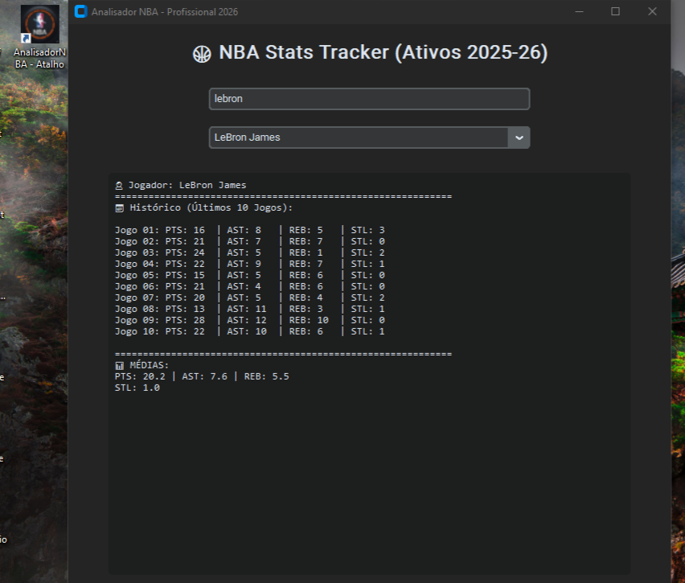
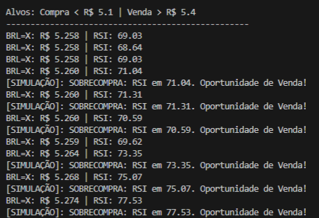

Olá, sou o Sergio Henrique Paschoalini Junior
Desenvolvedor Full Stack focado em Python, automação de processos e soluções desktop inteligentes.
Desenvolvedor Full Stack focado em Python, automação de processos e soluções desktop inteligentes.

Software desktop para análise em tempo real de estatísticas da NBA utilizando a API oficial e interface gráfica.

Automação financeira que monitora cotações e envia alertas via Telegram.